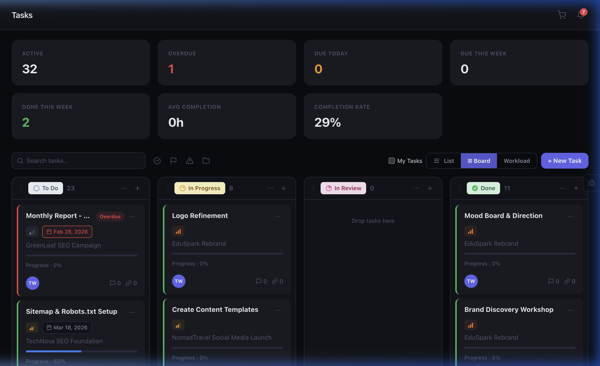

Every task, perfectly organized
Kanban boards, list views, subtasks, checklists, dependencies, labels, live timers, and threaded comments — your team's productivity engine.

Get your tasks under control
Start your 14-day free PRO trial and experience the full task management suite.